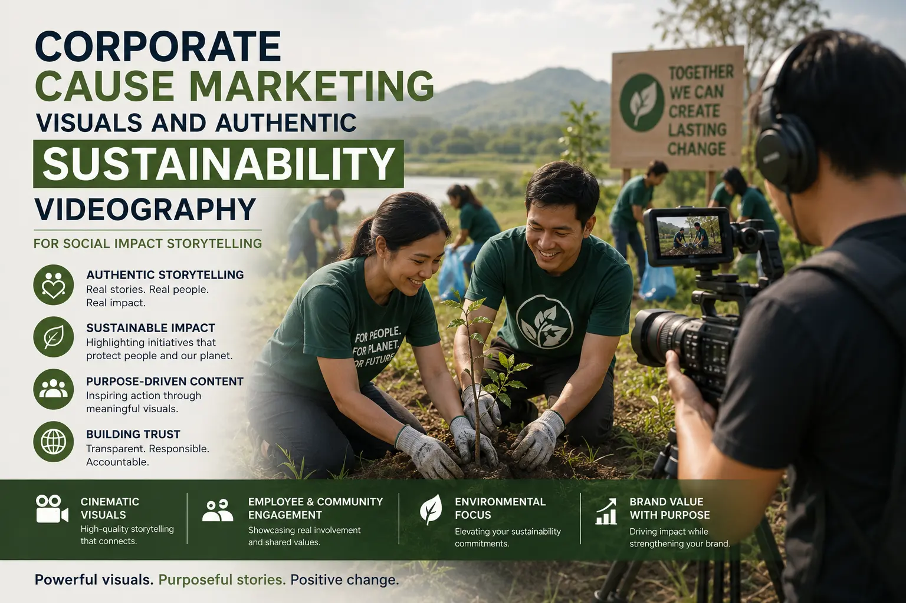
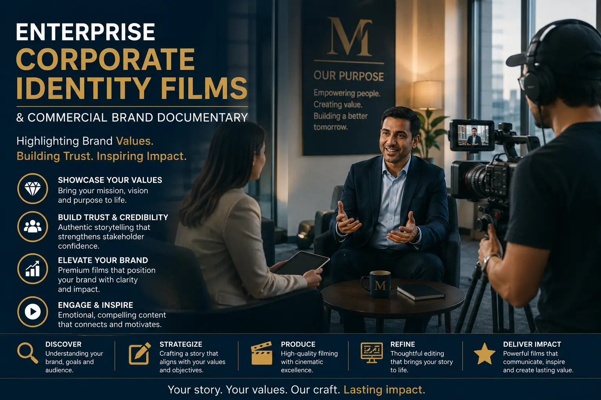

Documenting Your Brand's Impact with High-Integrity Corporate Social Responsibility (CSR) Videography
The Credibility Crisis in CSR Communication
Every major brand in India now communicates its corporate social responsibility initiatives. Most of this communication fails — not because the initiatives themselves lack value, but because the communication lacks integrity. The audience has been trained by a decade of performative CSR content to recognise the visual vocabulary of empty corporate virtue: the stock footage of children's smiling faces, the sweeping drone shots of green landscapes, the executive narration about "giving back" accompanied by carefully staged photo opportunities.
This visual vocabulary has become the marker of content the audience should not trust. And the tragedy is that brands doing genuine, measurable, impactful social work find their communication dismissed alongside the performative content of brands doing nothing of substance — because the visual language is identical.
Corporate CSR videography that achieves genuine credibility requires a fundamentally different production approach — one that prioritises documentary evidence over promotional language, real voices over corporate narration, verified outcomes over aspirational claims, and visual honesty over visual polish. The goal is not to make the CSR initiative look impressive. The goal is to make it look real — because in a communication environment saturated with performative content, reality is the most impressive thing a brand can communicate.
The Documentary Approach: Evidence Over Performance
Documenting brand social impact with integrity requires adopting the methodological principles of documentary filmmaking rather than the production conventions of corporate promotional video. The distinction is fundamental: promotional video tells the audience what to believe; documentary video shows the audience evidence and allows them to form their own conclusions.
- Location authenticity: filming where the work actually happens. High-integrity CSR documentation is filmed in the actual environments where the CSR initiatives operate — the real school building, the real village, the real factory floor, the real community centre — with all their genuine character, imperfection, and authenticity. Staging CSR content in idealised or neutral environments strips the content of its most powerful credibility asset: the visual evidence that the work is happening in a specific, real, identifiable place.
- Beneficiary voices as primary narrators. The most credible voice in any CSR documentary is not the CEO's, the CSR director's, or a professional narrator's — it is the voice of the person whose life the initiative has actually affected. Social impact storytelling that centres the beneficiary's authentic, unscripted testimony — in their own language, in their own words, filmed in their own environment — carries a weight of credibility that no amount of corporate narration can replicate. The beneficiary's story is the evidence. Everything else is commentary.
- Process documentation alongside outcome documentation. Showing only the completed outcome of a CSR initiative — the finished school building, the operational water system, the thriving community programme — tells the audience what was achieved but not how, or at what cost in effort, resources, and problem-solving. Authentic sustainability videography documents the process alongside the outcome: the planning meetings, the construction progress, the challenges encountered and overcome, the collaboration between the brand's team and the community. This process documentation communicates the genuine investment of effort that makes the outcome credible.
- Quantified outcomes presented visually. Claims of impact without specific numbers are claims the audience has learned to discount. "We helped thousands of children" communicates nothing verifiable. "427 children in Ramanathapuram district completed their secondary education through the programme in 2025" communicates a specific, verifiable fact. Enterprise corporate identity films that include specific, quantified outcomes — presented through clear visual data, on-screen statistics, or beneficiary testimony that references specific numbers — communicate the precision and accountability that distinguish genuine impact from promotional rhetoric.
Stakeholder Trust
High-integrity CSR documentation builds measurable trust with all stakeholder groups — investors who evaluate ESG commitments, customers who factor social responsibility into purchase decisions, employees who want to work for organisations whose values are genuine, and communities who need to see that corporate promises result in real outcomes.
Regulatory and Reporting Value
Professionally documented CSR video content serves multiple corporate reporting functions — annual report supplements, ESG disclosure materials, investor presentations, and regulatory compliance documentation — providing visual evidence of initiatives that text-based reporting alone cannot communicate with equivalent impact.
Recruitment and Retention
Authentic CSR documentation is consistently ranked among the most effective employer branding content — demonstrating to current and prospective employees that the organisation's stated values translate into genuine action. Employees who see their company's social impact documented with integrity experience higher workplace pride and organisational commitment.
Long-Term Brand Equity
While promotional CSR content generates short-term awareness, documented CSR content builds long-term brand equity — creating a cumulative archive of genuine social impact that compounds in credibility over time. A brand that can point to five years of honestly documented impact has built a trust asset that no amount of promotional spending can purchase.

Corporate Cause Marketing Visuals: The Ethical Framework
Corporate cause marketing visuals — content that connects the brand's commercial identity with its social cause commitments — require an ethical framework that ensures the communication serves the cause as effectively as it serves the brand. Without this framework, cause marketing content risks instrumentalising social issues for commercial benefit — a risk that audiences are increasingly sensitive to and that can produce severe reputational damage when detected.
- The cause leads, the brand follows. In high-integrity cause marketing content, the social issue and its human reality are the primary subject — the brand's involvement is presented as a supporting element rather than the hero of the narrative. The visual hierarchy places the beneficiaries, the community, and the impact at the centre of the frame; the brand's presence is communicated through contextual evidence (branded uniforms on field workers, branded materials in programme environments) rather than prominent logo placement and corporate self-congratulation.
- Dignity in representation. Non-profit corporate video shoots that document vulnerable communities, marginalised populations, or individuals in challenging circumstances require a representation approach that prioritises the dignity and agency of the subjects. This means: filming subjects in moments of strength, capability, and self-determination rather than exclusively in moments of vulnerability; obtaining genuine informed consent that the subjects understand and are comfortable with; and avoiding visual conventions that reduce complex human beings to passive recipients of corporate generosity.
- Proportionality between investment and communication. The scale and production quality of CSR communication should be proportionate to the scale of the actual CSR investment. A brand that spends more on documenting its CSR work than on the work itself has made a communication investment that audiences will correctly identify as promotional rather than impact-focused. Highlighting brand values through film is most credible when the production investment is visibly modest relative to the programme investment — communicating that the brand's priority is the work, not the publicity.
- Ongoing documentation, not one-time productions. A single CSR video produced for an annual report or a campaign launch communicates a single moment. Ongoing, longitudinal documentation — returning to the same programmes, the same communities, the same beneficiaries over months and years — communicates sustained commitment. The most credible commercial brand documentary approaches to CSR are those that document impact over time, showing progression, development, and the long-term relationship between the brand and the communities it serves.
Non-Profit Corporate Video Shoots: The Production Methodology
Non-profit corporate video shoots — production sessions that document CSR initiatives in the field, in communities, and in programme environments — require a production methodology that balances professional quality with documentary integrity and ethical sensitivity.
Pre-Production
- Advance engagement with programme managers and community leaders to understand the real story before the shoot
- Informed consent processes for all subjects, conducted in their own language with clear explanation of how footage will be used
- Research into the programme's actual outcomes, challenges, and ongoing needs to ensure honest representation
- Logistical planning that minimises disruption to programme operations — the shoot adapts to the programme, not the reverse
Production
- Small, unobtrusive production teams (2–4 people) that minimise the camera's disruption to natural behaviour
- Observational filming that captures the programme in its genuine daily operation rather than staged performances
- Open-ended interview techniques that allow subjects to tell their own stories without scripted prompts
- Environmental and contextual footage that documents the real physical and social environment of the programme
Post-Production
- Editorial approach that preserves the authenticity of captured interviews — no re-scripting, no selective editing that changes meaning
- Colour grading that maintains the honest visual character of the locations rather than imposing a cinematic aesthetic
- Music selection that supports without manipulating — understated, respectful underscore rather than emotionally manipulative tracks
- Fact-checking of all on-screen claims, statistics, and outcomes with programme managers before final delivery
Authentic Sustainability Videography: The Environmental Documentation
Authentic sustainability videography documents a brand's environmental practices, commitments, and measured outcomes with the same evidence-based approach that high-integrity CSR documentation applies to social programmes — showing what the brand is actually doing, measuring the actual outcomes, and communicating the genuine complexity of environmental responsibility.
- Operational documentation: showing the actual systems. The most credible sustainability content shows the actual operational systems that deliver environmental performance — the factory floor energy management systems, the waste processing facilities, the water treatment infrastructure, the renewable energy installations — filmed in their real operational state, not cleaned up for the camera. The visual evidence of working environmental infrastructure communicates genuine investment in a way that aspirational language about environmental commitment cannot.
- Supply chain transparency. For brands whose environmental impact extends through their supply chain — which includes virtually every manufacturing, retail, and food brand — authentic sustainability videography documents the actual supply chain practices: the sourcing locations, the processing facilities, the logistics operations, and the environmental management at each stage. This supply chain documentation is among the most commercially valuable CSR content a brand can produce, because supply chain transparency directly addresses the consumer concern about environmental and social conditions in manufacturing.
- Measured outcomes, not promised intentions. Sustainability content that communicates measured outcomes — "We reduced water consumption by 23% per unit of production between 2024 and 2026, measured at our Madurai and Coimbatore facilities" — is fundamentally more credible than content that communicates intentions — "We are committed to reducing our environmental footprint." The measured outcome is verifiable. The intention is not. Social impact storytelling that centres on measured outcomes builds the trust that intentions-based communication erodes.
- Honest acknowledgment of challenges and ongoing work. No brand's sustainability journey is complete or flawless — and the audience knows this. Sustainability content that acknowledges specific challenges the brand is still working on, areas where progress has been slower than planned, and the genuine difficulty of systemic environmental improvement communicates a level of honesty that polished, challenge-free sustainability narratives cannot. This honesty is not a weakness in the communication — it is the single most powerful credibility signal available.

Enterprise Corporate Identity Films: The Integrated Approach
Enterprise corporate identity films that integrate CSR and sustainability documentation into the broader corporate identity narrative — rather than treating CSR as a separate communication silo — produce the most commercially effective and credibly positioned brand content.
- CSR as integrated brand identity, not separate programme. The most effective approach presents the brand's social and environmental work as an integral part of its commercial operations — not as a philanthropic add-on but as a core operational practice that reflects the brand's fundamental values and business philosophy. A manufacturing brand whose corporate identity film seamlessly integrates footage of its production excellence, its product quality, and its environmental management communicates that sustainability is built into the business rather than bolted onto it.
- Employee voices as credibility anchors. Employees who work on CSR and sustainability programmes — the environmental manager, the community liaison, the supply chain sustainability officer — are among the most credible narrators of the brand's social impact story. Their technical knowledge, personal commitment, and day-to-day involvement in the work communicates genuine organisational investment in a way that executive narration cannot. Highlighting brand values through film through employee testimony produces content that audiences trust because the speakers are clearly invested in and knowledgeable about the work they describe.
- Community partnership documentation. CSR initiatives that operate in genuine partnership with communities — where the community has voice, agency, and influence over the programme's design and implementation — should document that partnership dynamic. Footage of community consultation meetings, joint planning sessions, and community leadership involvement communicates a partnership model rather than a top-down corporate charity model — which is both more effective in impact terms and more credible in communication terms.
- Long-form and short-form integrated distribution. Effective CSR documentation requires both long-form documentary content (5–15 minutes) for detailed stakeholder communication — annual reports, investor presentations, employee communications, website dedicated CSR sections — and short-form derivative content (30–90 seconds) for social media, paid advertising, and recruitment marketing. The long-form content provides the evidential depth; the short-form content provides the reach and awareness. Both should be planned and produced together from a single production investment.
The Production Planning Framework for CSR Documentation
Planning a commercial brand documentary approach to CSR documentation requires integration with the brand's CSR calendar, programme operations, and stakeholder communication schedule:
- Annual documentation calendar aligned with programme milestones. Plan production sessions around genuine programme milestones — the completion of a construction phase, the graduation of a training cohort, the publication of environmental audit results — rather than around marketing calendar dates. Milestone-aligned documentation captures genuine moments of achievement that marketing-calendar-aligned production must stage.
- Pre-production stakeholder engagement. Before any camera arrives at a CSR programme location, the production team should engage with all stakeholders — programme managers, community leaders, beneficiaries, local government contacts — to understand the real story, identify the most authentic voices, and establish the trust relationships that produce genuine, unguarded on-camera testimony.
- Multi-format production planning. Each CSR documentation session should be planned to produce assets for all required formats — the long-form documentary, the short-form social media content, the still photography for print and web, and the data visualisation elements for annual reporting — from a single production investment. This multi-format approach maximises the return on each field production day and ensures visual consistency across all CSR communication channels.
- Review and approval processes that protect integrity. CSR content should be reviewed by programme managers for factual accuracy, by legal teams for compliance with representation and consent requirements, and by the communications team for brand alignment — but the editorial integrity of the documentary content should be preserved through these reviews. The review process should verify facts and protect subjects, not polish the narrative into promotional content that sacrifices the documentary credibility the production was designed to create.
Conclusion
Corporate CSR videography, documenting brand social impact, corporate cause marketing visuals, authentic sustainability videography, and social impact storytelling are the production disciplines that give brands the most credible and commercially durable form of values-based communication — documentation that shows the work rather than claiming the virtue.
The commercial value of high-integrity CSR documentation is not speculative. Brands with documented, evidenced, honestly communicated social and environmental impact consistently outperform competitors on consumer trust metrics, employee engagement scores, investor ESG evaluations, and long-term brand equity measures. The investment in honest documentation pays returns that promotional CSR content cannot deliver — because trust, once earned through evidence, compounds in value year after year.
At The PhD Ads in Madurai, we produce corporate CSR videography, social impact storytelling, and enterprise corporate identity films for brands committed to documenting their genuine social and environmental impact — high-integrity production that shows the work honestly and builds the trust that lasts.
Key Topics
Ready to Document Your Brand's Genuine Social Impact?
At The PhD Ads in Madurai, we produce corporate CSR videography, social impact storytelling, and enterprise corporate identity films for brands committed to honest, evidence-based documentation of their social and environmental work — high-integrity production that builds genuine stakeholder trust.
Email: team@e2o.in